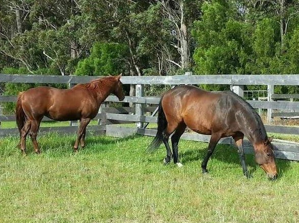
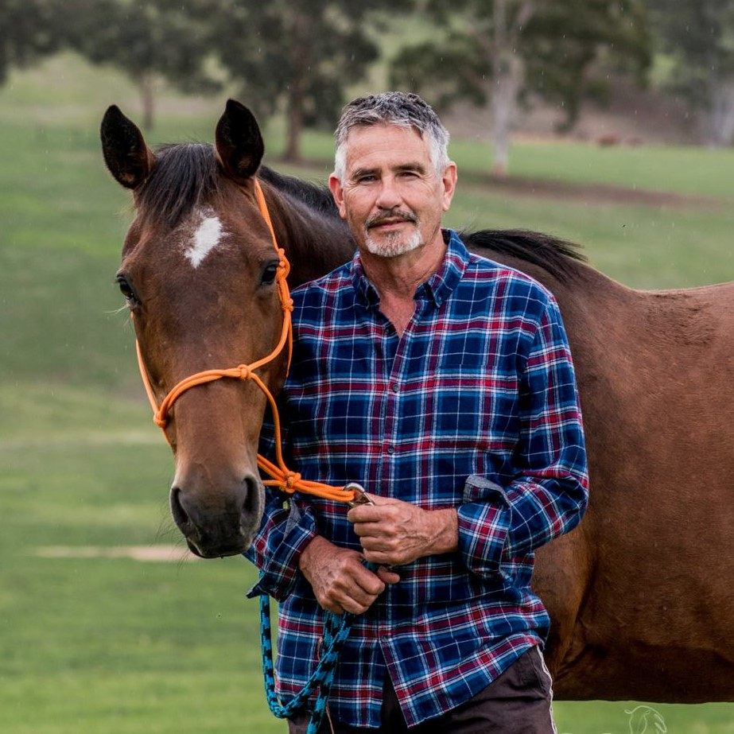
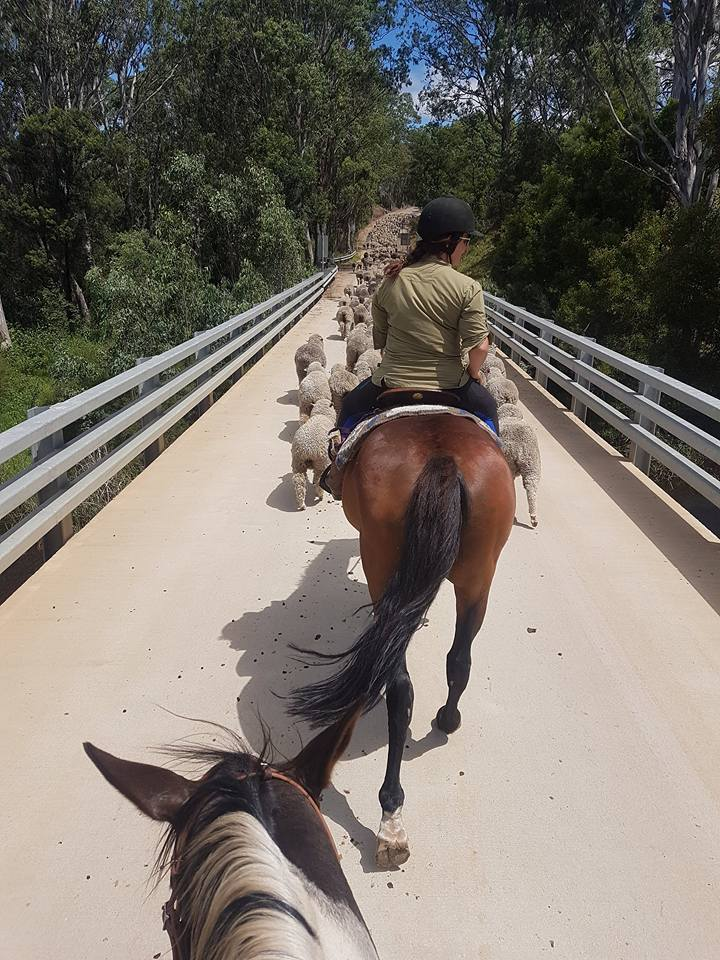
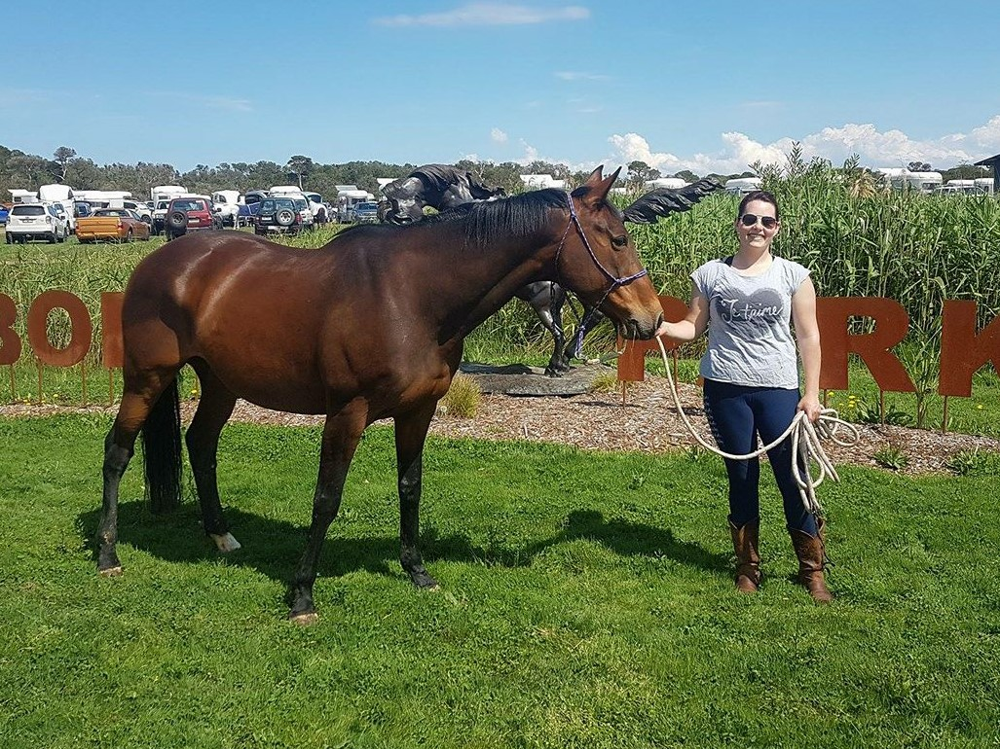
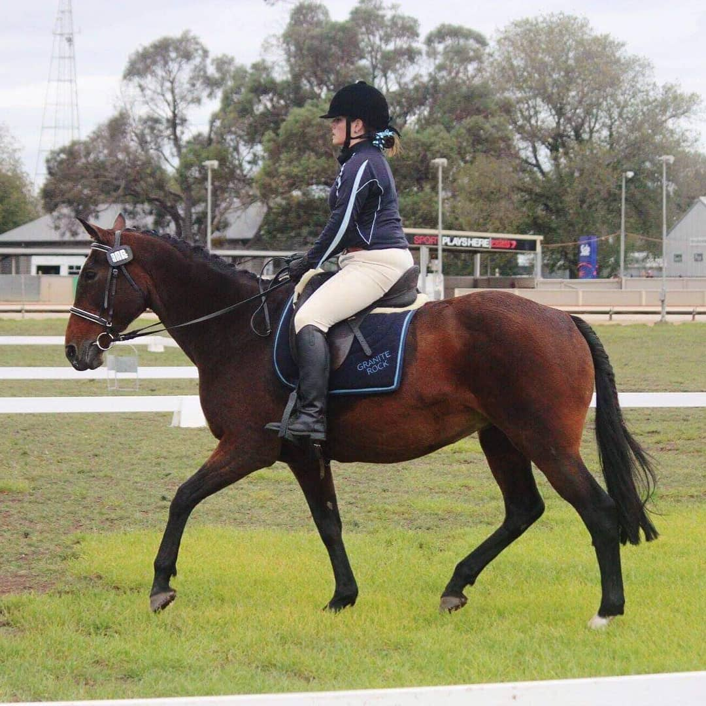
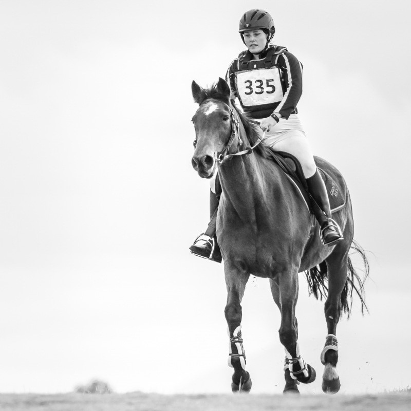

Equusential Blog Blog Posts

Posted on 10 August 2020
Tess the Wonder Horse
Tess came into our lives a few years ago when her owners were moving interstate and she and her (aged!) filly were given to my mother in-law to hopefully get into work and find good homes for.
Tess was in her early 20s and Claire was in her mid-teens. Tess and her daughter Claire are Australian stock-horses and had lived on the same farm most their life until they moved to my in-laws.
They had been living a relaxed life and hence were both obese on arrival. Their re-introduction to work was staggered due to the weight they had to lose and fitness to gain.
Claire had also foundered which delayed her ability to work. They were gradually introduced to a herd of 5 horses which had them increasing fitness in the paddock.

Tess and Claire 2016: on their arrival
I knew from first meeting them that I really liked Tess, she had a 'common sense' attitude and a kind eye.. she kept her cool despite being in an unfamiliar environment. I knew it would be a long journey as her fitness levels were so low and she had become quite unsound in her hind legs, due to lack of movement/ arthritis as well as a large scar on her hock that interrupted hock action. She was ungainly in her movement and got puffed very easily (at a trot!).
I began riding Tess occasionally at my in-laws in early 2016. She was unbalanced and often lost her footing and rushed around. Her fitness gradually built and she was ridden out on the trails (not her favourite) but she was becoming increasingly reliable.

Tess and Dad
My Dad purchased her in July 2016 to be a farm/trail horse. She had a naturally affinity and is comfortable with him as her rider. She loves farm work!
She has a natural talent for stock work and has also done team penning with my sister.

Tess mustering sheep
I started riding Tess more in March 2017 as my horse, Squirrel, had been put in foal. I knew I would need another horse to ride once Squirrel was too heavily in foal to ride and thought I would give Tess a go. What a great decision! I started riding her regularly in August 2018. This included taking her to Adult Riding Club. She quickly showed a natural talent for jumping, even though she hadn't show jumped before!

Tess at Boneo Park Top Teams Dressage 2018
Tess continued to show a cool temperament in new situations including clinics, rallies local and large competitions. We jump low levels and this old horse rarely came home without a placing! Tess really shines on cross country as she is brave, even when her rider is not!

Tess with a few of her results
" ...Never underestimate the ability of an old horse to learn new things.."
Tess has been truly a joy to learn and build confidence with. She 'knew' very little about Adult Riding disciplines but taught me everything! I also had a lot of help from friends to build my confidence jumping for which I am very grateful!

Tess at Top Teams Combined Training, Sale, 2019
I have learnt a lot of lessons from Tess, keys include:
-
Never underestimate the ability of an old horse to learn new things.
-
A good horse is a good horse regardless of age.
-
Motion can help keep older horses happy, her arthritic lameness becomes less as she builds fitness – motion is lotion!
-
Assuming nothing is a great place to start, a clean slate without a large back story means you start at day zero and build from there.
-
Give things a go and trust the ability and temperament of your horse.
-
Trust your instinct, if you meet a horse that you take a liking to, following that feeling will often lead you in the right direction!
-
The right horse can build your confidence, confidence does not have to be wholly rider driven.
-
Trust the process.
-
Horses enjoy variety. They have dignity, pride and are naturally curious. Tess had lived most of her recent life in a paddock. Once she was out and about and as we achieved together you could really see her confidence in her abilities and interest in the world grew.
Tess at Top Teams Horse Trials, Wandin, 2018
In recent times I have learnt more about Tess's background, including that she did some bush racing – which explains her bravery cross country and natural jumping skills!
Last year (2019) Tess unfortunately suffered an eye injury in the paddock. After multiple surgeries and treatments it is now healing. Fingers crossed for a full recovery as I look forward to learning and competing with Tess again!

Tess at Top Teams Horse Trials, Bulla (Wyena ARC), 2019
Yvette xx